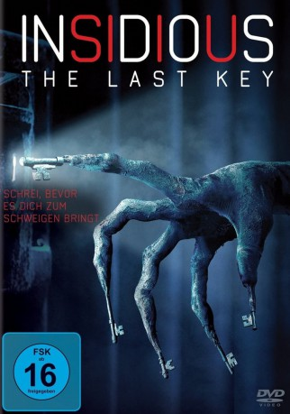
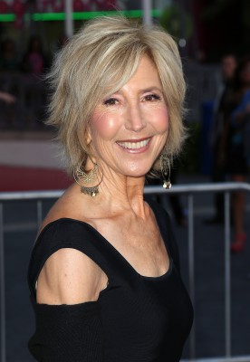
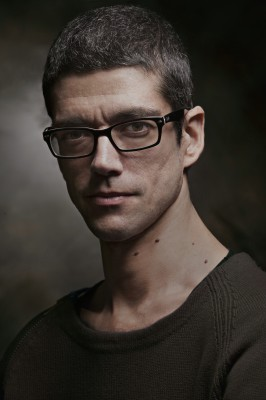
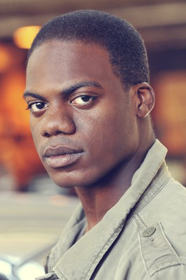
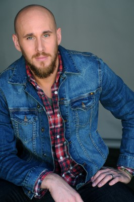
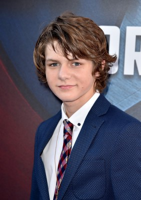
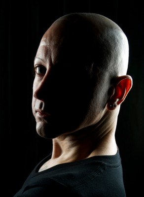

#8944 Insidious: Chapter 4 - The Last Key
 
 IMDB-Wertung: 5.7 / 10
IMDB-Wertung: 5.7 / 10  Metascore: 49
Metascore: 49 
Parapsychologin Elise Rainier (Lin Shaye) wohnt mittlerweile mit den zwei Geisterjägern Specs (Leigh Whannell) und Tucker (Angus Sampson) zusammen. Gemeinsam sind sie die Firma Spectral Sightings, die aufs Austreiben von Dämonen spezialisiert ist, die aus einer Parallelwelt angreifen. Ihr neuester Fall führt das ungleiche Trio in Elises Vergangenheit – in das Haus in New Mexico, wo sie als Kind Schreckliches erlebte und wo nun eine andere Familie in Gefahr ist…
Jahr: 2018
Dauer: 103 Minuten
FSK: 16
Land: Kanada Studio: Sony Pictures ReleasingTonspuren: DTS - ,
Untertitel: Deutsch,
Auflösung: 1080p (1920x808) Größe: 3952 MB
Genre: Thriller, Horror, Mystery
Regisseur:  Adam Robitel
Adam Robitel
Drehbuch: Leigh Whannell
Soundtrack: Joseph Bishara
Darsteller:
-  Lin Shaye als Elise Rainier
 Leigh Whannell als Specs
Leigh Whannell als Specs Angus Sampson als Tucker
Angus Sampson als Tucker- Kirk Acevedo als Ted Garza
- Caitlin Gerard als Imogen Rainier
 Spencer Locke als Melissa Rainier
Spencer Locke als Melissa Rainier Josh Stewart als Gerald Rainier
Josh Stewart als Gerald Rainier- Tessa Ferrer als Audrey Rainier
- Aleque Reid als Anna
- Ava Kolker als Young Elise Rainier
- Pierce Pope als Young Christian Rainier
 Bruce Davison als Christian Rainier
Bruce Davison als Christian Rainier-  Javier Botet als KeyFace
-  Marcus Henderson als Detective Whitfield
- Amanda Jaros als Mara Jennings
 Judith Drake als Waitress Pam
Judith Drake als Waitress Pam- Hana Hayes als Teenage Elise Rainier
- Thomas Robie als Teenage Christian
-  Josh Wingate als Executed Man
- Danielle Kennedy als Kitchen Woman
-  Ty Simpkins als Dalton Lambert
 Rose Byrne als Renai Lambert
Rose Byrne als Renai Lambert Patrick Wilson als Josh Lambert
Patrick Wilson als Josh Lambert-  Joseph Bishara als Lipstick-Face Demon
- Stefanie Scott als Quinn Brenner
 Barbara Hershey als Lorraine Lambert
Barbara Hershey als Lorraine Lambert- Danielle Bisutti als Mother of Parker Crane
- Bob Heslip als Lost soul / inmate (uncredited)
- Craig Reed als Lost Soul / Inmate (uncredited)
- Melanie Gaydos als Dark Angel
- Brynn Bowie als Kali Lambert
- Madison Bowie als Kali Lambert
- Lubella Gauna als Nurse (uncredited)
- Zahra Susan Ingersoll als Prisoner (uncredited)
- Devin Koehler als Lost Soul (uncredited)
Datei: X:\4-Tetralogie(A-K)\Insidious\Insidious Chapter 4 - The Last Key (2018, FSK16, 1920x808).mkv seit 16.05.2018
Festplatte: HD Collection-3(N-Z)-6(A-Z)
 Es gibt insgesamt 7 Filme in der Gruppe '4-Tetralogie(A-K)\Insidious'
Es gibt insgesamt 7 Filme in der Gruppe '4-Tetralogie(A-K)\Insidious'